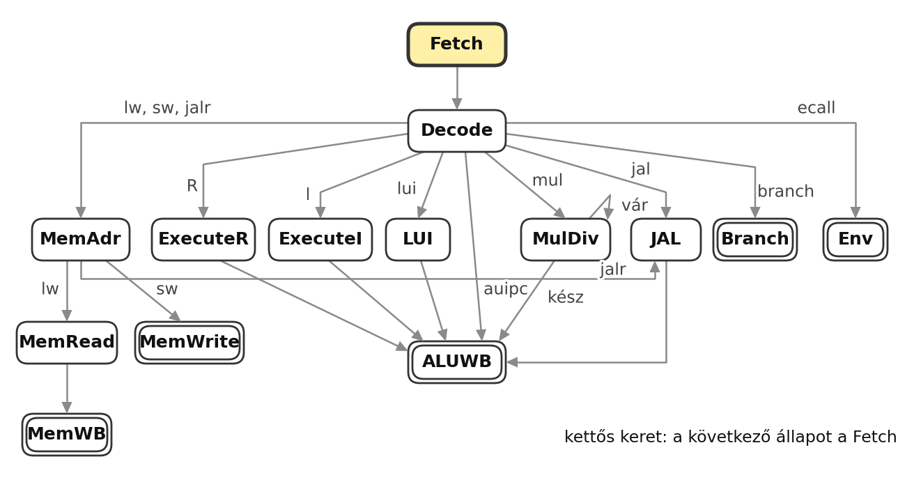
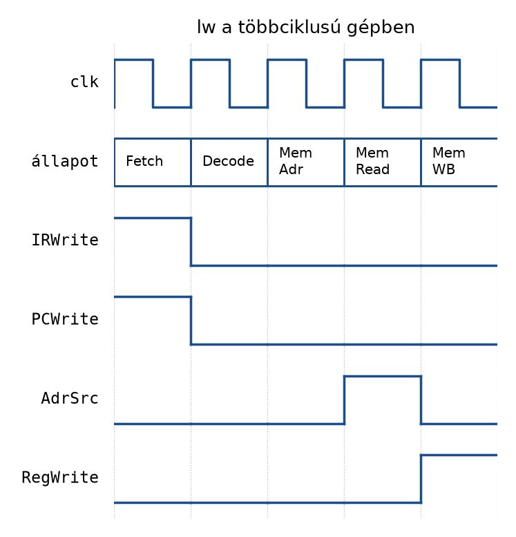

Az egyciklusú gép minden utasításnak 750 ps-ot ad, pedig a
lui 390 ps alatt végezne. Közben a hardver nagy része
parlagon hever: két memória, egy ALU és két külön összeadó dolgozik
egyszerre, hogy egy utasítás egyetlen cikluson belül minden lépést
elvégezhessen.
Fordítsuk meg a gondolatot. Ha az utasítást több rövid ciklusra
bontjuk, a ciklusidőt elég egy lépéshez méretezni, a gyors utasítás
kevesebb ciklust kap, és ugyanazt a memóriát és ALU-t több lépésben is
felhasználhatjuk. A sum kernel 333 utasítása így 1330 rövid
ciklus lesz. A kérdés: gyorsabb lesz-e ettől a program, és ki mondja meg
minden ciklusban, mit csináljanak a váltók?
Egy utasítás útja természetesen tagolódik: lehívás, dekódolás és regiszterolvasás, végrehajtás az ALU-ban, memóriaelérés, visszaírás. A többciklusú gép ezeket egymás után, külön órajelciklusokban végzi. Ami az egyik ciklusban kiszámolódott és a következőben kell, azt közbenső regiszterbe tesszük, mert a vezetéken a következő ciklusig nem marad meg.
A vezérlés már nem lehet tisztán kombinációs: tudni kell, hányadik lépésnél tartunk. Ezt a „hol tartunk” információt egy véges állapotgép (Véges állapotgépek) őrzi. Minden állapot egy ciklus; az állapot kijelöli a váltók állását, az utasítás opkódja pedig a következő állapotot.
Az ábra négy pillanatképet mutat egy lw és egy
beq végrehajtásából. Figyeld meg, hogy a 4. ciklusban
ugyanaz a memória olvas adatot, amely az 1. ciklusban utasítást adott,
és hogy az ALU az 1. ciklusban a PC-t lépteti, a 3. ciklusban címet
számol, a 8. ciklusban összehasonlít.
| Regiszter | Mit őriz | Mikor íródik |
|---|---|---|
IR |
az éppen futó utasítás szavát | csak a Fetch végén |
OldPC |
az utasítás címét (a PC ekkorra már PC + 4) | csak a Fetch végén |
A, B |
az rs1, rs2 regiszterek értékét |
minden ciklus végén |
ALUOut |
az ALU előző ciklusbeli eredményét | minden ciklus végén |
Data |
a memóriából legutóbb olvasott szót | minden ciklus végén |
Az IR-nek azért kell írásengedély (IRWrite), mert az
utasításnak a végrehajtás teljes ideje alatt változatlanul rendelkezésre
kell állnia. A többi regiszter ciklusonként felülíródik, de ez nem baj,
ha az értékét mindig a rákövetkező ciklusban használjuk fel.
Az egyciklusú géphez képest eltűnik a második memória és a két összeadó. Helyettük multiplexerek jelennek meg:
OldPC, A
vagy 0;B, a közvetlen érték vagy a
4;ALUOut, Data
vagy közvetlenül az ALU kimenete; ez megy a PC-be és a
regiszterfájlba.A PC akkor íródik, ha PCWrite = 1, vagy ha Branch = 1 és
a feltétel igaz.
Definíció. A többciklusú vezérlő Moore-gép: a kimenete (a vezérlőjelek) csak az állapottól függ, a következő állapot az aktuális állapottól és az utasításosztálytól.

| Állapot | Regisztertranszfer | Fontos jelek |
|---|---|---|
Fetch |
IR ← M[PC]; OldPC ← PC; PC ← PC + 4 |
IRWrite, PCWrite |
Decode |
A, B ← regiszterek; ALUOut ←
OldPC + Imm |
ALUSrcA = OldPC |
MemAdr |
ALUOut ← A + Imm |
|
MemRead |
Data ← M[ALUOut] |
AdrSrc = 1 |
MemWB |
x[rd] ← Data |
RegWrite |
MemWrite |
M[ALUOut] ← B |
AdrSrc = 1, MemWrite |
ExecuteR / ExecuteI |
ALUOut ← A op B / Imm |
ALUOp = 10 |
ALUWB |
x[rd] ← ALUOut |
RegWrite |
Branch |
ha a feltétel igaz: PC ← ALUOut |
ALUOp = 01, Branch |
JAL |
PC ← ALUOut; ALUOut ← OldPC +
4 |
PCWrite |
LUI |
ALUOut ← 0 + Imm |
ALUSrcA = 0 |
MulDiv |
ALUOut ← A · B vagy osztás,
több ciklusban |
ALUOp = 11 |
Env |
rendszerhívás (a modellben a környezet) |
A táblázat minden sora egyetlen órajelciklus; a transzferek az órajel élén egyszerre hajtódnak végre.
Az első két állapot minden utasításnál közös: a Fetch és
a Decode még nem tudja, mi jön, mégis dolgozik. A
Decode ráadásul előre kiszámítja a
célcímet (OldPC + Imm), mert az ALU úgyis szabad.
Ha az utasítás elágazás vagy jal, a cím a következő
ciklusban készen áll; ha nem, az eredmény elvész. Az auipc
pedig éppen ezt a szót kéri, így neki a Decode után azonnal
az ALUWB következik.
A JAL állapot egy ciklusban két dolgot csinál, ami
elsőre ellentmondásnak látszik: a PC megkapja ALUOut régi
értékét (a célcímet), és ALUOut felülíródik
OldPC + 4-gyel. A regiszter azonban a ciklus alatt még a
régi értéket adja, és csak az élen vesz fel újat. A jalr a
MemAdr címszámítását használja újra (rs1 +
imm), majd a JAL állapotba lép; a célcím legalsó bitjét a
PC bemenete törli.
A szorzás és az osztás hardvere lassú (ALU,
shifter, szorzás és osztás). Az egyciklusú gépben ez minden
utasítást lelassítana; itt a MulDiv állapot
vár: addig tér vissza önmagára, amíg az egység készet
nem jelez. A modellben a szorzás 3, az osztás 32 ciklus.
Továbbvitt eredmény. A vezérlő állapotgép (állapotonként egy sor vezérlőjel és egy következőállapot-szabály) pontosan az, amit a Mikroprogramozott vezérlés és a CISC-dekódolás ROM-ba ír: állapot ↔︎ mikroutasítás.
| Osztály | Állapotok | Ciklus |
|---|---|---|
lw |
Fetch, Decode, MemAdr, MemRead, MemWB | 5 |
sw |
Fetch, Decode, MemAdr, MemWrite | 4 |
R, I-aritmetika, lui |
Fetch, Decode, Execute…/LUI, ALUWB | 4 |
jal |
Fetch, Decode, JAL, ALUWB | 4 |
jalr |
Fetch, Decode, MemAdr, JAL, ALUWB | 5 |
| elágazás | Fetch, Decode, Branch | 3 |
auipc |
Fetch, Decode, ALUWB | 3 |
mul |
Fetch, Decode, MulDiv × 3, ALUWB | 6 |
Az átlagos CPI a keverékkel súlyozott átlag, ahol a gyakoriság, a ciklusszám:
Szóban: a CPI most a programtól függ, mert a ciklusszám
utasításonként más. A sum ciklusmagjában (lw,
add, két addi, bne)
.
A ciklusidőt a leglassabb állapot szabja meg. Az
előző példakésleltetésekkel (Az egyciklusú gép
teljesítménye és korlátai) ez a MemRead:
regiszter-kimenet (40), vezérlés (25), két multiplexer (60), memória
(200), Data előkészítése (50):
A ciklusidő a 750 ps fele, de egy utasítás átlagosan 4 ciklus. A
sum kernel utasításonkénti ideje
ps, kétszer annyi, mint az egyciklusú gépé. Két oka
van. Először: minden ciklusban újra kifizetjük a regiszter és a vezérlés
többletidejét (40 + 25 + 50 = 115 ps), egy ötciklusos utasításnál
ötször. Másodszor: a lépések egyenetlenek, a MemWB 155
ps-ig tartana, mégis 375-öt kap.
A többciklusú gép akkor nyer, ha egy ritka, nagyon lassú művelet uralná az egyciklusú gép ciklusidejét. Egy 3200 ps-os kombinációs egység, például egy lassú osztó, az egyciklusú gépben 3660 ps-os ciklust jelentene minden utasításra, a többciklusúban csak néhány várakozó ciklust ott, ahol kell. A hardver mérlege is figyelemre méltó:
| Erőforrás | Egyciklusú | Többciklusú |
|---|---|---|
| memória | 2 (utasítás és adat) | 1 |
| ALU és összeadó | 3 | 1 (plusz szorzó-osztó) |
| közbenső regiszter (a PC-n kívül) | 0 | 6 |
| vezérlő | kombinációs dekóder | állapotgép |
A többciklusú gép tehát kevesebb drága egységet kíván, cserébe hat regisztert és bonyolultabb vezérlést. A szűkös tranzisztorkeretű korai processzoroknál ez a csere különösen vonzó volt.
Továbbvitt eredmény. A többciklusú gép idejét a képlet adja, ahol a leglassabb állapoté. A futószalag elve: átbocsátás és késleltetés és a Pipeline-szimulátor és mélyebb futószalagok ugyanezzel a vasegyenlettel mutatja meg, hogyan szorítható a CPI 1 közelébe rövid ciklus mellett.
Kiinduló állapot: PC = 0x40, a0 = 0x10000,
a1 = a2 = 5, M[0x10008] = 0x1234; a program
lw t0, 8(a0), majd beq a1, a2, 16.
| Ciklus | Állapot | A ciklus alatt | A ciklus végén |
|---|---|---|---|
| 1 | Fetch | cím = PC; ALU: 0x40 + 4 | IR ← 0x00852283, OldPC ← 0x40, PC ←
0x44 |
| 2 | Decode | ALU: 0x40 + 8 (nem kell) | A ← 0x10000, ALUOut ← 0x48 |
| 3 | MemAdr | ALU: A + 8 |
ALUOut ← 0x10008 |
| 4 | MemRead | cím = ALUOut |
Data ← 0x1234 |
| 5 | MemWB | eredmény = Data |
t0 ← 0x1234 |
| 6 | Fetch | cím = PC = 0x44 | IR ← 0x00C58863, OldPC ← 0x44, PC ←
0x48 |
| 7 | Decode | ALU: 0x44 + 16 | A ← 5, B ← 5, ALUOut ←
0x54 |
| 8 | Branch | A − B = 0, Z = 1 |
PC ← 0x54 |
Összesen 8 ciklus, 3000 ps; az egyciklusú gépen
ps volna. A 8. ciklusban a PC-be a Decode által előre
kiszámított ALUOut kerül, miközben az ALU már az
összehasonlítást végzi.
Ugyanez idődiagramon a lw öt ciklusára:

Az írásengedélyek csak egy-egy ciklusban aktívak: ez mondja meg, melyik élen mi változik.
A vezérlő az archkit.logic.FSM Moore-gépe. Futtassuk a
kézi példát, és írassuk ki ciklusonként az állapotot és a változó
regisztereket:
import sys; sys.path.insert(0, "code")
from archkit import datapath as dp, riscv
prog = riscv.assemble("lw t0, 8(a0)\nbeq a1, a2, 16", text_base=0x40)
cpu = dp.MultiCycle(prog)
for name, value in [("a0", 0x10000), ("a1", 5), ("a2", 5)]:
cpu.regs.regs[riscv.reg_number(name)] = value
cpu.mem[0x10008:0x1000C] = (0x1234).to_bytes(4, "little")
for _ in range(8):
before = dict(cpu.r)
c = cpu.cycle()
changed = {k: f"{v:#x}" for k, v in cpu.r.items()
if v != before[k] and k in ("PC", "OldPC", "IR", "ALUOut", "A", "B")}
print(f"{c.n} {c.state:8} -> {c.next_state:8} {changed}")
print("t0 =", hex(cpu.reg("t0")), " PC =", hex(cpu.r["PC"]))1 Fetch -> Decode {'PC': '0x44', 'OldPC': '0x40', 'IR': '0x852283', 'ALUOut': '0x44'}
2 Decode -> MemAdr {'A': '0x10000', 'ALUOut': '0x48'}
3 MemAdr -> MemRead {'ALUOut': '0x10008'}
4 MemRead -> MemWB {'ALUOut': '0x44'}
5 MemWB -> Fetch {}
6 Fetch -> Decode {'PC': '0x48', 'OldPC': '0x44', 'IR': '0xc58863', 'ALUOut': '0x48'}
7 Decode -> Branch {'A': '0x5', 'B': '0x5', 'ALUOut': '0x54'}
8 Branch -> Fetch {'PC': '0x54', 'ALUOut': '0x0'}
t0 = 0x1234 PC = 0x54Az 5. ciklus listája üres, mert ott a regiszterfájl változik
(t0 ← 0x1234). Az ALUOut viszont szinte minden
ciklusban új értéket kap, akkor is, ha senki nem használja. Most a
teljes kernelek:
x = list(range(64))
kernels = {"sum": riscv.sum_src(list(range(1, 65))), "saxpy": riscv.saxpy_src(3, x, x),
"matmul n=8": riscv.matmul_src(8)}
for name, src in kernels.items():
m = dp.MultiCycle(src)
m.run()
assert m.trace == riscv.run(src).trace
r = dp.compare_times(dp.class_counts(m.trace))
t_m, t_s = r["T_multi"] / 1000, r["T_single"] / 1000
print(f"{name:11} ciklus={len(m.cycles):6} CPI={m.cpi:.3f} "
f"T_több={t_m:8.1f} ns T_egy={t_s:8.1f} ns")sum ciklus= 1330 CPI=3.994 T_több= 498.8 ns T_egy= 249.8 ns
saxpy ciklus= 2538 CPI=4.324 T_több= 951.7 ns T_egy= 739.6 ns
matmul n=8 ciklus= 46921 CPI=4.482 T_több= 17595.4 ns T_egy= 13190.9 nsA szorzást tartalmazó kerneleknél a különbség kisebb, mert az egyciklusú gép itt 1260 ps-os ciklussal kénytelen futni.
Az interaktív lapon a „Program” listából négy programot választhatsz, a lejátszó ciklusonként lépked, felül az adatút, alul az állapotdiagram látszik; a kiemelt állapot az aktuális, a narancs él a következő átmenet. A „Minden vezérlőjel a táblázatban” kapcsoló a nulla értékű jeleket is megmutatja.
MemRead,
AdrSrc = 1, a memória a Data regiszterbe olvas. A 8.
ciklusban a „regiszterek a ciklus elején” táblában ALUOut =
0x54, és a ciklus végén a PC ezt kapja.jalr ciklusait, és figyeld meg, hogy a JAL
állapotot mindkét ugrás használja.MulDiv állapot háromszor
egymás után jelenik meg (a „vár” él aktív). Mi lenne, ha a szorzás 8
ciklus lenne?ALUOut. Tünet: a
saját vezérlőbővítés rossz címre ír. Ok: az ALUOut
minden ciklus végén felülíródik, tehát két ciklussal később már nem az a
cím van benne. Javítás: az értéket a következő állapotban
használd fel, vagy adj hozzá külön írásengedélyt.Decode állapotban a PC
már PC + 4. Javítás: a cél OldPC + Imm.IR és az OldPC
regiszter?Decode állapotban, és miért
érdemes?JAL állapotban, bár az
ALUOut felülíródik?lw,
add, sw, beq, jal
sorozat, és mennyi idő ez a többciklusú, illetve az egyciklusú
gépen?jalr, ha a
jal csak 4?MemWrite állapot
vezérlőjeleit, és indokold meg, miért nem vonható össze a
MemAdr állapottal.matmul (n
= 8) CPI-jét 1, 3 és 8 ciklusos szorzással, és magyarázd meg az
eredményt.Decode
állapotban kiértékeli egy külön összehasonlítóval (késleltetése, mint az
ALU-é), így az elágazás 2 ciklus. Nő-e a ciklusidő, és mennyit gyorsul a
sum kernel?A többciklusú gép az utasítást 3–5 rövid ciklusra bontja, egyetlen
memóriát és ALU-t használ újra, az eredményeket pedig az
IR, OldPC, A, B,
ALUOut és Data közbenső regiszterekben viszi
tovább. A vezérlő Moore-állapotgép: közös
Fetch–Decode előtag után utasításosztályonként
más út; a Decode előre számolja a célcímet, a szorzás és
osztás a MulDiv állapotban vár. Ciklusszám: load 5, store
és aritmetika 4, elágazás 3.
,
a sum kernelen 4 körül; a ciklusidő a leglassabb állapoté
(375 ps). A példában mégis kétszer lassabb az egyciklusú gépnél, mert a
regiszter- és vezérlési többlet ciklusonként ismétlődik; lassú ritka
műveleteknél viszont nyer. Az állapotgép a mikroprogramozás alapja.
OldPC + Imm-et, a lehetséges célcímet: az ALU szabad,
és elágazásnál, jal-nál, auipc-nél egy ciklust
spórol.ALUOut régi értékét kapja;
a regiszter csak az élen változik.MemRead).ciklus, ps. Az egyciklusú gépen ps.
; ps utasításonként.
A jal célja PC-relatív, ezt a Decode már
kiszámolta. A jalr bázisa az rs1, amelynek
értéke csak a Decode végén kerül az A
regiszterbe, ezért külön címszámítási ciklus (MemAdr)
kell.
AdrSrc = 1, ResultSrc = ALUOut, MemWrite = 1, minden
írásengedély (RegWrite, IRWrite, PCWrite) 0. A cím a MemAdr
ciklusban csak az ALU kimenetén jelenik meg; ha ugyanabban a ciklusban
írnánk, a ciklusidőnek az ALU és a memória késleltetését együtt kellene
tartalmaznia, vagyis a ciklus meghosszabbodna.
src = riscv.matmul_src(8)
for k in (1, 3, 8):
m = dp.MultiCycle(src, mul_cycles=k)
m.run()
counts = dp.class_counts(m.trace)
share = counts["muldiv"] / len(m.trace)
print(f"mul {k} ciklus: CPI = {m.cpi:.3f}, mul-arány = {share:.1%}")mul 1 ciklus: CPI = 4.091, mul-arány = 19.6%
mul 3 ciklus: CPI = 4.482, mul-arány = 19.6%
mul 8 ciklus: CPI = 5.460, mul-arány = 19.6%A CPI a szorzás ciklusszámával lineárisan nő, a meredekség a
mul aránya. A matmul minden elemhozzáférésnél
szorzással számol indexet, ezért ez az arány magas; a fordítók ezt a
szorzást léptetett mutatóval váltják ki (erősségcsökkentés).
Az új út a Decode-ban: regiszter (40) + regiszterolvasás
(100) + összehasonlítás (120) + PC-multiplexer (30) + PC-előkészítés
(50) = 340 ps, kisebb a 375 ps-nál, tehát a ciklusidő nem nő. A
sum 333 utasításából 64 elágazás, mindegyik 1 ciklust nyer:
ciklus, a gyorsulás
.
Az ár egy külön összehasonlító; a Decode célcím-számítása
változatlan.